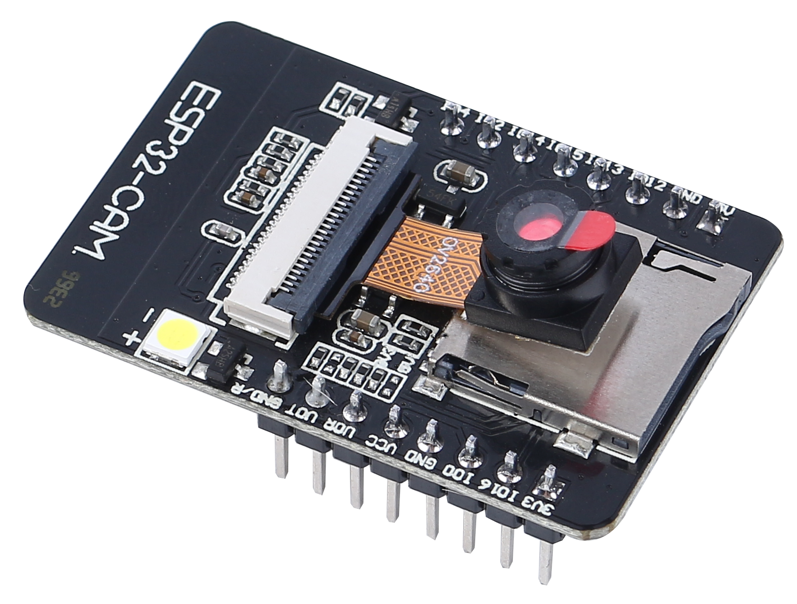
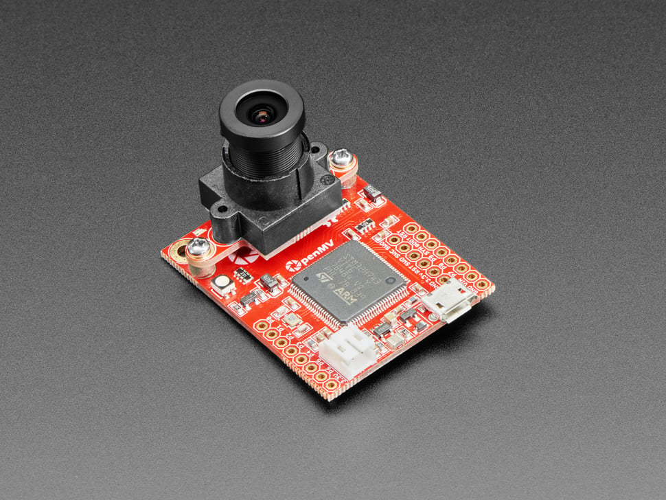

ИИ‑камеры
В последние годы появилось множество недорогих камерных модулей с поддержкой нейронных сетей и компьютерного зрения. Такие ИИ‑камеры позволяют реализовать функции распознавания лиц, отслеживания объектов, классификации изображений и даже простейшего анализа сцен без полноценного компьютера.
ESP32‑CAM

- Описание. ESP32‑CAM — недорогой модуль на базе микроконтроллера ESP32 с камерой OV2640. Модуль не имеет USB‑разъёма, зато оборудован слотом microSD и может работать как автономная Wi‑Fi‑камера. Устройство имеет небольшой размер, поддерживает 802.11b/g/n, встроенный 520КБ SRAM, 4МБ внешней PSRAM и может выполнять базовые алгоритмы компьютерного зрения, например обнаружение лица.
- Особенности. Модуль поддерживает интерфейсы UART, SPI, I²C, PWM и ADC. Он может передавать изображения по Wi‑Fi, хранить их на microSD‑карте, поддерживает режимы сна и обновление прошивки по OTA.
- Ссылки:
AlexGyver https://alexgyver.ru/lessons/esp32-cam-board/ ESP32-CAM: Алгоритмы компьютерного зрения https://habr.com/ru/articles/951838/ Подробное руководство на английском RandomNerdTutorials.
GitHub https://github.com/espressif/esp32-camera
Pixy(Pixy2)

- Описание. Pixy (CMUcam5)— камера с аппаратным распознаванием цвета и отслеживанием объектов. Версия Pixy2 стала быстрее и компактнее: она умеет обнаруживать линии и перекрёстки для роботов‑линейщиков, обеспечивая частоту 60к/с, и снабжена встроенным источником света. Камера обучается «видеть» объекты по цвету, а затем передаёт информацию на контроллер.
- Особенности. Pixy2 хранит библиотеки для Arduino, LEGOMindstormsEV3 и RaspberryPi; поддерживает интерфейсы SPI, I²C, UART и USB; может работать с различными контроллерами и конфигурируется через программу PixyMon наWindows/Mac/Linux.
- Ссылки:
Документация и исходники размещены на сайте Pixycam.
Быстрый старт описан в Quick‑StartGuide forPixy2: установка PixyMon, обучение объекта и подключение к Arduino или RaspberryPi.
HuskyLens

- Описание. HuskyLens от компании DFRobot — камера с процессором KendryteK210 и 2‑дюймовым IPS‑экраном. Она имеет семь встроенных алгоритмов (распознавание лиц, отслеживание и распознавание объектов, следование за линией, распознавание цвета, чтение тегов и классификация объектов). Камера учится объектам нажатием кнопки, а затем может передавать данные по UART или I²C в Arduino или micro:bit.
- Особенности. Устройство оснащено 2‑мегапиксельным сенсором OV2640/GC0328, 8МБ памяти PSRAM/Flash, дисплеем 320×240px и кнопками «Функция» и «Обучение» для переключения режимов и обучения. Питание 3,3–5В, интерфейсы UART/I²C, обновление прошивки через USB.
- Ссылки:
Подробное описание и документация доступны в викиDFRobot: HuskyLens V1.0 SKUSEN0305/SEN0336.
OpenMVCam

- Описание. OpenMV Cam — маленькая микроконтроллерная камера для простых задач компьютерного зрения. Разработчики называют проект «Arduino для машинного зрения»: камера запускает скрипты на MicroPython и способна выполнять простые операции распознавания объектов и цветов.
- Особенности. В версии OpenMVRT1062 используются процессор ARMCortex‑M7 600МГц, сенсор OV5640 (5МП), 32МБ SDRAM, 1МБ SRAM и 16МБ Flash; есть слот microSD (25МБ/с), Wi‑Fi802.11a/b/g/n, Bluetooth5.1, Ethernet 10/100Мбит/с и акселерометр.Камеры OpenMV программируются через IDE под Windows/Mac/Linux.
- Ссылки:
Основная информация публикуется на сайте openmv.io.
ArduinoNiclaVision

- Описание. NiclaVision — компактная плата от Arduino с двухмегапиксельной камерой GC2145, двумя ядрами STM32H747AII6 (Cortex‑M7до480МГц и Cortex‑M4до240МГц) и интегрированными датчиками: микрофон, датчик расстояния, 6‑осевой IMU. Благодаря Wi‑Fi и BluetoothLE плата подходит для задачи отслеживания объектов, предиктивного обслуживания и отправки данных в облако.
- Особенности. Устройство поддерживает MicroPython, снабжено слотом microSD, может питаться от аккумулятора, содержит различные периферийные порты и программируется как через ArduinoIDE, так и через OpenMVIDE.
- Ссылки:
Подробные характеристики представлены в документации Arduino.
ESP32‑S3‑EYE

- Описание. ESP32‑S3‑EYE— маленькая AI‑плата от Espressif, основанная на SoC ESP32‑S3 и фреймворке ESP‑WHO.Она оснащена 2‑мегапиксельной камерой, LCD‑дисплеем и микрофоном.Модуль имеет 8МБ OctalPSRAM и 8МБ флеш‑памяти; поддерживает передачу изображений по Wi‑Fi и отладку через Micro‑USB.
- Особенности. Разработанная для задач компьютерного зрения и аудиоанализа, плата поставляется с демо‑примерами распознавания лиц и других объектов.
- Ссылки:
Описание платы и спецификации опубликованы на сайте Espressif: ESP32‑S3‑EYE Overview.